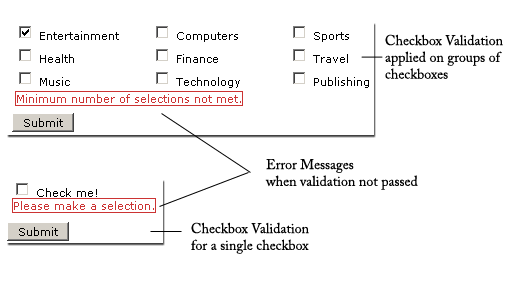

A Spry Validation Checkbox widget is a checkbox or group of checkboxes in an HTML code form that display valid or invalid states when the user selects or fails to select a checkbox. For example, you can add a Validation Checkbox widget to a form in which a user might be required to make three selections. If the user fails to make all three selections, the widget returns a message stating that the minimum number of selections was not met.
A version of this file is available on Adobe LiveDocs. Please check it for comments and updates.
The following example shows a Validation Checkbox widget in various states.

The Validation Checkbox widget includes a number of states (for example, valid, invalid, required value, and so on). You can alter the properties of these states by using the Property inspector, depending on the desired validation results. A Validation Checkbox widget can validate at various points (for example, when the user clicks outside the widget, as the user makes selections, or when the user tries to submit the form).
Whenever a Validation Checkbox widget enters one of these states through user interaction, the Spry framework logic applies a specific CSS class to the HTML container for the widget at run time. For example, if a user tries to submit a form, but makes no selections, Spry applies a class to the widget that causes it to display the error message, “Please make a selection.” The rules that control the style and display states of error messages reside in the SpryValidationCheckbox.css file that accompanies the widget.
The default HTML code for the Validation Checkbox widget, usually inside a form, is made up of a container span tag that surrounds the input type="checkbox" tag of the checkbox. The HTML code for the Validation Checkbox widget also includes script tags in the head of the document and after the widget’s HTML code.
The HTML code for the Validation Checkbox widget also includes script tags in the head of the document and after the widget’s HTML code. The script tag in the head of the document defines all of the JavaScript functions related to the Checkbox widget. The script tag after the widget code creates a JavaScript object that makes the checkbox interactive.
Following is the HTML code for a Validation Checkbox widget:
<head>
...
<!-- Link the Spry Validation Checkbox JavaScript library -->
<script src="SpryAssets/SpryValidationCheckbox.js" type="text/javascript"></script>
<!-- Link the CSS style sheet that styles the widget -->
<link href="SpryAssets/SpryValidationCheckbox.css" rel="stylesheet" type="text/css" />
</head>
<body>
<form id="form1" name="form1" method="post" action="">
<!-- Create the checkbox widget and assign a unique id-->
<span id="sprycheckbox1">
<input type="checkbox" name="checkbox1" value="1"/>
<input type="checkbox" name="checkbox2" value="2"/>
<!--Add an error message-->
<span class="checkboxRequiredMsg">Please make a selection.</span>
</span>
</form>
<!-- Initialize the Validation Checkbox widget object-->
<script type="text/javascript">
var sprycheckbox1 = new Spry.Widget.ValidationCheckbox("sprycheckbox1");
</script>
</body>
In the code, the new JavaScript operator initializes the Checkbox widget object, and transforms the span content with the ID of sprycheckbox1 from static HTML code into an interactive page element.
The span tag for the error message in the widget has a CSS class applied to it. This class (which is set to display:none; by default), controls the style and visibility of the error message, and exists in the accompanying SpryValidationCheckbox.css file. When the widget enters different states as a result of user interaction, Spry places different classes on the container for the widget, which in turn affects the error-message class.
You can add other error messages to a Validation Checkbox widget by creating a span tag (or any other type of tag) to hold the text of the error message. Then, by applying a CSS class to it, you can hide or show the message, depending on the widget state.
You can change the default appearance of the Validation Checkbox widget's states by editing the corresponding CSS rule in the SpryValidationCheckbox.css file. For example, to change the background color for a state, edit the corresponding rule or add a new rule (if it’s not already present) in the style sheet.
In the preceding example, span tags create the structure for the widget:
Container SPAN INPUT type="checkbox" Error message SPAN
You can, however, use almost any container tag to create the widget.
Container DIV INPUT type="checkbox" Error Message P
Spry uses the tag ID (not the tag itself) to create the widget. Spry also displays error messages using CSS code that is indifferent to the actual tag used to contain the error message.
The ID passed into the widget constructor identifies a specific HTML element. The constructor finds this element and looks inside the identified container for a corresponding input tag. If the ID passed to the constructor is the ID of the input tag (rather than a container tag), the constructor attaches validation triggers directly to the input tag. If no container tag is present, however, the widget cannot display error messages, and different validation states alter only the appearance of the input tag element (for example, its background color).
The SpryValidationCheckbox.css file contains the rules that style the Validation Checkbox widget and its error messages. You can edit these rules to style the look and feel of the widget and error messages. The names of the rules in the CSS file correspond to the names of the classes specified in the widget’s HTML code.
The following is the CSS code for the SpryValidationCheckbox.css file:
/*Validation Checkbox styling classes*/
.checkboxRequiredMsg, .checkboxMinSelectionsMsg, .checkboxMaxSelectionsMsg{
display: none;
}
.checkboxRequiredState .checkboxRequiredMsg,
.checkboxMinSelectionsState .checkboxMinSelectionsMsg,
.checkboxMaxSelectionsState .checkboxMaxSelectionsMsg {
display: inline;
color: #CC3333;
border: 1px solid #CC3333;
}
The SpryValidationCheckbox.css file also contains extensive comments, explaining the code and the purpose for certain rules. For further information, see the comments in the file.
For example, create a folder called SpryAssets in the root folder of your web site, and upload the SpryValidationCheckbox.js file to it. The SpryValidationCheckbox.js file contains all of the information necessary for making the Checkbox widget interactive.
<script src="SpryAssets/SpryValidationCheckbox.js" type="text/javascript"></script>
Make sure that the file path to the SpryValidationCheckbox.js file is correct. This path varies depending on where you’ve placed the file in your web site.
<link href="SpryAssets/SpryValidationCheckbox.css" rel="stylesheet" type="text/css" />
Make sure that the file path to the SpryValidationCheckbox.css file is correct. This path varies depending on where you’ve placed the file in your web site.
<input type="checkbox" name="checkbox1" value="1"/> <input type="checkbox" name="checkbox2" value="2"/>
<span id="sprycheckbox1"> <input type="checkbox" name="checkbox1" value="1"/> <input type="checkbox" name="checkbox2" value="2"/> </span>
<script type="text/javascript">
var sprycheckbox1 = new Spry.Widget.ValidationCheckbox("sprycheckbox1");
</script>
The new JavaScript operator initializes the Checkbox widget object, and transforms the span tag content with the ID of sprycheckbox1 from static HTML code into an interactive checkbox object. The Spry.Widget.ValidationCheckbox method is a constructor in the Spry framework that creates checkbox objects. The information necessary to initialize the object is contained in the SpryValidationCheckbox.js JavaScript library that you linked to at the beginning of this procedure.
Make sure that the ID of the checkbox widget’s container span tag matches the ID parameter you specified in the Spry.Widgets.ValidationCheckbox method. Make sure that the JavaScript call comes after the HTML code for the widget.
The complete code looks as follows:
<head>
...
<script src="SpryAssets/SpryValidationCheckbox.js" type="text/javascript"></script>
<link href="SpryAssets/SpryValidationCheckbox.css" rel="stylesheet" type="text/css" />
</head>
<body>
<span id="sprycheckbox1">
<input type="checkbox" name="checkbox1" value="1"/>
<input type="checkbox" name="checkbox2" value="2"/>
</span>
<script type="text/javascript">
var sprycheckbox1 = new Spry.Widget.ValidationCheckbox("sprycheckbox1");
</script>
</body>
Create a span tag (or any other type of tag) to display the error message, and assign the appropriate class to it, as follows:
<span id="sprycheckbox1"> <input type="checkbox" name="checkbox1" value="1"/> <input type="checkbox" name="checkbox2" value="2"/> <span class="checkboxRequiredMsg">Please make a selection.</span> </span>
The checkboxRequiredMsg rule is located in the SpryValidationCheckbox.css file, and is set to display:none by default. When the widget enters a different state through user interaction, Spry applies the appropriate class—the state class—to the container of the widget. This action affects the error-message class, and by extension, the appearance of the error message.
For example, the following shows the CSS rule from the SpryValidationCheckbox.css file:
.checkboxRequiredMsg, .checkboxMinSelectionsMsg, .checkboxMaxSelectionsMsg{
display: none;
}
.checkboxRequiredState .checkboxRequiredMsg,
.checkboxMinSelectionsState .checkboxMinSelectionsMsg,
.checkboxMaxSelectionsState .checkboxMaxSelectionsMsg {
display: inline;
color: #CC3333;
border: 1px solid #CC3333;
}
By default, no state class is applied to the widget container, so that when the page loads in a browser, the error message text in the preceding HTML code example only has the checkboxRequiredMsg class applied to it. (The property and value pair for this rule is display:none, so the message remains hidden.) If the user fails to make a selection, however, Spry applies the appropriate class to the widget container, as follows:
<span id="sprycheckbox1" class="checkboxRequiredState"> <input type="checkbox" name="checkbox1" value="1"/> <input type="checkbox" name="checkbox2" value="2"/> <span class="checkboxRequiredMsg">Please make a selection.</span> </span>
In the preceding CSS code, the state rule with the contextual selector .checkboxRequiredState .checkboxRequiredMsg overrides the default error-message rule responsible for hiding the error message text. Thus, when Spry applies the state class to the widget container, the state rule determines the appearance of the widget, and displays the error message inline in red with a 1-pixel solid border.
Following is a list of default error-message classes and their descriptions. You can change these classes and rename them. If you do so, don’t forget to change them in the contextual selector also.
| Error message class |
Description |
|---|---|
.checkboxRequiredMsg |
Causes error message to display when the widget enters the required state |
.checkboxMinSelectionsMsg |
Causes error message to display when the widget enters the minimum number of selections state |
.checkboxMaxSelectionsMsg |
Causes error message to display when the widget enters the maximum number of selections state |
Note: You cannot rename state-related class names because they are hard-coded as part of the Spry framework.
By default, the Validation Checkbox widget validates when the user clicks the submit button. You can, however, set two other options: blur or change. The validateOn:["blur"] parameter causes the widget to validate whenever the user clicks outside the widget. The validateOn:["change"] parameter causes the widget to validate as the user makes selections.
To specify when validation occurs, add a validateOn parameter to the constructor as follows:
<script type="text/javascript">
var sprycheckbox1 = new Spry.Widget.ValidationCheckbox("sprycheckbox1", {validateOn:["blur"]});
</script>
As a convenience, you can discard the brackets if your validateOn parameter contains a single value (for example, validateOn: "blur"). If the parameter contains both values, however (validateOn:["blur", "change"]), include brackets in the syntax.
By default, a Validation Checkbox widget is set to required. If you insert a number of checkboxes on your page, however, you can specify a minimum and maximum selection range. For example, if you have six checkboxes within the span tag for a single Validation Checkbox widget, and you want to make sure that the user selects at least three checkboxes, you can set such a requirement for the entire widget.
To specify a minimum or maximum number of selections, add the minSelections property or maxSelections property (or both) and a value to the constructor, as follows:
<script type="text/javascript">
var checkboxwidget1 = new Spry.Widget.ValidationCheckbox("checkboxwidget1",{minSelections:value, maxSelections:value});
</script>
By default, Validation Checkbox widgets require the user to make at least one selection before submitting the form. You can, however, make selections optional for the user.
To change the required status of a checkbox, add the isRequired property to the constructor and set its value to false, as follows:
<script type="text/javascript">
var checkboxwidget1 = new Spry.Widget.ValidationCheckbox("checkboxwidget1", {isRequired:false});
</script>
The SpryValidationCheckbox.css file provides the default styling for the Validation Checkbox widget. You can customize the widget by changing the appropriate CSS rule. The CSS rules in the SpryValidationCheckbox.css file use the same class names as the related elements in the widget’s HTML code, so it’s easy for you to know which CSS rules correspond to the widget and its error states.
The SpryValidationCheckbox.css file should already be included in your website before you start customizing.
The SpryValidationCheckbox.css file contains extensive comments, explaining the code and the purpose for certain rules. For further information, see the comments in the file.
By default, error messages for the Validation Checkbox widget appear in red with a 1-pixel solid border surrounding the text.
To change the text styling of Validation Checkbox widget error messages, use the following table to locate the appropriate CSS rule, and then change the default properties, or add your own text styling properties and values.
| Text to style |
Relevant CSS rule |
Relevant properties to change |
|---|---|---|
Error message text |
.checkboxRequiredState .checkboxRequiredMsg, .checkboxMinSelectionsState .checkboxMinSelectionsMsg, .checkboxMaxSelectionsState .checkboxMaxSelectionsMsg |
color: #CC3333; border: 1px solid #CC3333; |
While you can replace error message-related class names with class names of your own by changing the rules in the CSS and the class names in the HTML code, you cannot change or replace state-related class names, because the behaviors are hard-coded as part of the Spry framework. You can, however, override the default state-related class name with your own class name by specifying a new value in the third parameter of the widget constructor.
To change widget state-related class names, add one of the overriding options to the third parameter of the widget constructor, and specify your custom class name, as follows:
<script type="text/javascript">
var sprycheckbox1 = new Spry.Widget.ValidationCheckbox("sprycheckbox1", {requiredClass:"required"});
</script>
The following table provides a list of options you can use to override built-in state-related class names.
| Option |
Description |
|---|---|
requiredClass |
Overrides the "checkboxRequiredState" built-in value |
minSelectionsClass |
Overrides the "checkboxMinSelectionsState" built-in value |
maxSelectionsClass |
Overrides the "checkboxMaxSelectionsState" built-in value |
Copyright © 2006. Adobe Systems Incorporated. All rights reserved.